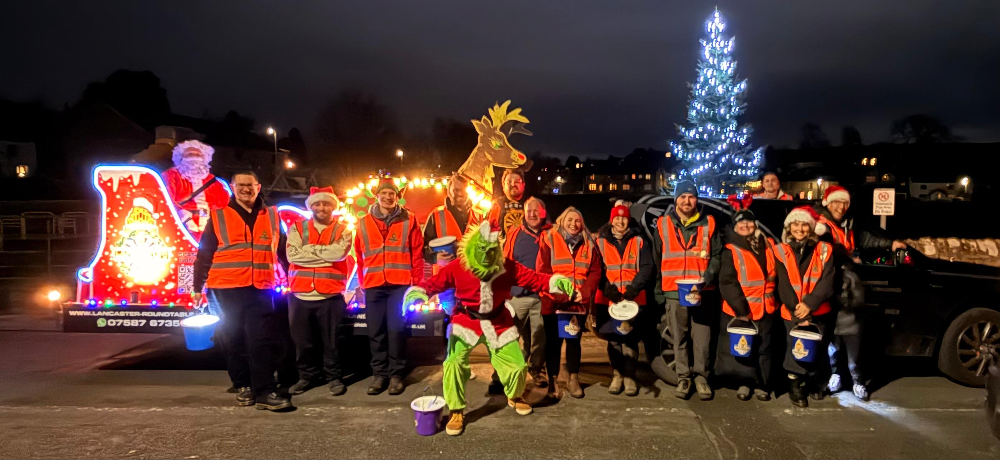

Lancaster Round Table Saves Christmas!
This December, Lancaster Round Table proudly continues the much-loved Santa Sleigh tradition, raising funds for local causes and spreading festive cheer throughout the district. Every year our volunteers take to the streets of Lancaster and the surrounding villages — bringing thousands of people together and making Christmas a little more magical.
EVERY DECEMBER • LANCASTER & DISTRICT • RAISING FUNDS FOR LOCAL CAUSES
CHRISTMAS 2025
THE IMPACT
Raised for local causes
Donated to volunteer groups
A massive thank you to everyone who donated. Your generosity helps us support incredible local groups and projects across the Lancaster district.
2025 SEASON
Our Volunteer Groups


THANK YOU
Proudly Supported By

ROUTES & SCHEDULE • DATES CONFIRMED FOR CHRISTMAS 2026
DECEMBER 2026
Santa Sleigh Routes
Dates for every route are confirmed for the 2026 Christmas season — see the full schedule below. Interactive route maps will appear here closer to the time.
2026 SEASON
Route Schedule
Every route below is sponsored by a local business who help us make it happen. Tap a route to see it on the map.
Get Involved
Want to help spread some Christmas magic? We're always looking for volunteers to help with collections, organising and more. Get in touch and we'll let you know how you can be part of it.
For local businesses
BACK THE SLEIGH SPONSOR SANTA'S SLEIGH 2026
Thousands of local families see the Santa's Sleigh every December. Get your business in front of them and support local causes at the same time.
Local Visibility
Stand out as a local business that makes a difference, featured across our channels all through December.
Real Community Impact
Every penny we raise supports local causes and the volunteer groups behind them, keeping the money where it belongs — in the Lancaster district.
Flexible Support
Partner with us through sponsorship, help with the kit we need, or put your people forward to volunteer.
Get in touch and we'll find a way to work together that suits you.
Before you head out